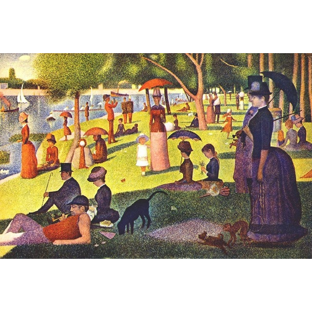

Georges Seurat
A Sunday Afternoon on the Island of La Grande Jatte painted in 1884, is Georges Seurat's most famous work. It is a leading example of pointillist technique, executed on a large canvas. Seurat's composition includes a number of Parisians at a park on the banks of the River Seine